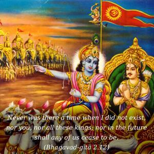
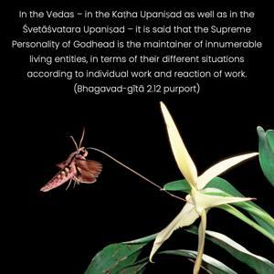
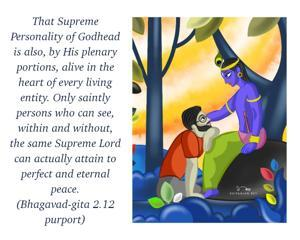
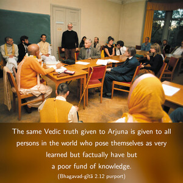
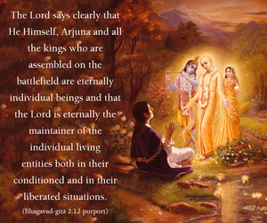

Never was there a time when I did not exist, nor you, nor all these kings; nor in the future shall any of us cease to be.





In the Vedas – in the Kaṭha Upaniṣad as well as in the Śvetāśvatara Upaniṣad – it is said that the Supreme Personality of Godhead is the maintainer of innumerable living entities, in terms of their different situations according to individual work and reaction of work. That Supreme Personality of Godhead is also, by His plenary portions, alive in the heart of every living entity. Only saintly persons who can see, within and without, the same Supreme Lord can actually attain to perfect and eternal peace.
nityo nityānāṁ cetanaś cetanānām
eko bahūnāṁ yo vidadhāti kāmān
tam ātma-sthaṁ ye ’nupaśyanti dhīrās
teṣāṁ śāntiḥ śāśvatī netareṣām
(Kaṭha Upaniṣad 2.2.13)
The same Vedic truth given to Arjuna is given to all persons in the world who pose themselves as very learned but factually have but a poor fund of knowledge. The Lord says clearly that He Himself, Arjuna and all the kings who are assembled on the battlefield are eternally individual beings and that the Lord is eternally the maintainer of the individual living entities both in their conditioned and in their liberated situations. The Supreme Personality of Godhead is the supreme individual person, and Arjuna, the Lord’s eternal associate, and all the kings assembled there are individual eternal persons. It is not that they did not exist as individuals in the past, and it is not that they will not remain eternal persons. Their individuality existed in the past, and their individuality will continue in the future without interruption. Therefore, there is no cause for lamentation for anyone.
The Māyāvādī theory that after liberation the individual soul, separated by the covering of māyā, or illusion, will merge into the impersonal Brahman and lose its individual existence is not supported herein by Lord Kṛṣṇa, the supreme authority. Nor is the theory that we only think of individuality in the conditioned state supported herein. Kṛṣṇa clearly says herein that in the future also the individuality of the Lord and others, as it is confirmed in the Upaniṣads, will continue eternally. This statement of Kṛṣṇa’s is authoritative because Kṛṣṇa cannot be subject to illusion. If individuality were not a fact, then Kṛṣṇa would not have stressed it so much – even for the future. The Māyāvādī may argue that the individuality spoken of by Kṛṣṇa is not spiritual, but material. Even accepting the argument that the individuality is material, then how can one distinguish Kṛṣṇa’s individuality? Kṛṣṇa affirms His individuality in the past and confirms His individuality in the future also. He has confirmed His individuality in many ways, and impersonal Brahman has been declared to be subordinate to Him. Kṛṣṇa has maintained spiritual individuality all along; if He is accepted as an ordinary conditioned soul in individual consciousness, then His Bhagavad-gītā has no value as authoritative scripture. A common man with all the four defects of human frailty is unable to teach that which is worth hearing. The Gītā is above such literature. No mundane book compares with the Bhagavad-gītā. When one accepts Kṛṣṇa as an ordinary man, the Gītā loses all importance. The Māyāvādī argues that the plurality mentioned in this verse is conventional and that it refers to the body. But previous to this verse such a bodily conception is already condemned. After condemning the bodily conception of the living entities, how was it possible for Kṛṣṇa to place a conventional proposition on the body again? Therefore, individuality is maintained on spiritual grounds and is thus confirmed by great ācāryas like Śrī Rāmānuja and others. It is clearly mentioned in many places in the Gītā that this spiritual individuality is understood by those who are devotees of the Lord. Those who are envious of Kṛṣṇa as the Supreme Personality of Godhead have no bona fide access to the great literature. The nondevotee’s approach to the teachings of the Gītā is something like that of a bee licking on a bottle of honey. One cannot have a taste of honey unless one opens the bottle. Similarly, the mysticism of the Bhagavad-gītā can be understood only by devotees, and no one else can taste it, as it is stated in the Fourth Chapter of the book. Nor can the Gītā be touched by persons who envy the very existence of the Lord. Therefore, the Māyāvādī explanation of the Gītā is a most misleading presentation of the whole truth. Lord Caitanya has forbidden us to read commentations made by the Māyāvādīs and warns that one who takes to such an understanding of the Māyāvādī philosophy loses all power to understand the real mystery of the Gītā. If individuality refers to the empirical universe, then there is no need of teaching by the Lord. The plurality of the individual soul and the Lord is an eternal fact, and it is confirmed by the Vedas as above mentioned.